Stop the slop.
A Python CLI plus GitHub Actions workflows that run security, hygiene and reliability checks on every PR. One command to install into any repo.
Slop is code and docs produced faster than anyone reads them: a key pasted in as an example, a function nobody can follow, a doc naming a task that no longer exists, a page that fails contrast. Each check catches one kind before it merges.
Install it once. Each pull request then gets one comment saying what passed and what to fix, and the same checks run on your machine before you push. This site is built and deployed with the suite it describes.


Try the CLI, or install the whole suite.
The CLI on its own runs a check locally. The installer adds the whole suite to a repo: the pinned CLI, the GitHub Actions workflows, the task ss:* commands and a pre-push hook.
Try the CLI
pipx install slopstopper-cli
slopstopper checks list
slopstopper doctor
slopstopper run hygiene:docs-size # one check; the report lands in .ss/reports/Needs only Python. slopstopper doctor lists the tools each check still wants (Node, Semgrep, Gitleaks, Trivy, Docker); install the ones for the checks you use. What each check needs →
Install the suite into a repo
curl -fsSL https://raw.githubusercontent.com/hungovercoders/slopstopper/main/install.sh | bashNeeds mise, which pins slopstopper-cli and task per repo so your machine and CI run the same version. Re-run the same command any time to refresh.
What does the installer do?
It writes mise.toml with the CLI pinned, one .github/workflows/ss-*.yml workflow per check, Taskfile.ss.yml with the task ss:* commands those workflows call, a starter .slopstopper.yml, the two Claude Code skills, and a pre-push hook that runs the fast hygiene checks before anything leaves your machine (--no-hooks skips it; it leaves an existing husky, lefthook or pre-commit setup alone).
Everything else the checks need, such as the Playwright specs and the Lighthouse config, ships inside the CLI; slopstopper templates eject <name> copies one out to customise.
For an API or a library, pick a profile
# JSON/gRPC endpoints, no browser surface
curl -fsSL https://raw.githubusercontent.com/hungovercoders/slopstopper/main/install.sh \
| bash -s -- --profile api
# library, CLI or package: nothing deployed
curl -fsSL https://raw.githubusercontent.com/hungovercoders/slopstopper/main/install.sh \
| bash -s -- --profile libraryThe browser checks need a served site, so a profile installs only the checks that fit: api keeps the API and static checks, library the static checks alone. slopstopper profile detect suggests one. What each profile keeps →
Run a check
task ss:hygiene:test runs the fast checks locally, and task --list shows the rest. Each check writes its report to .ss/reports/.
Open a PR
One comment on the pull request shows each check's verdict. A failing check adds its findings. Passing checks add nothing.
Tune it
Thresholds, page lists, the headers source and which checks run are all set in .slopstopper.yml. Each check's doc page names the setting that tunes it.
The full walkthrough: Adopting SlopStopper →
Let the agent install it and fix what it finds.
The installer also lands two skills in <repo>/.claude/skills/: slopstopper-install, so "install slopstopper" or "refresh slopstopper" does the right thing, and slopstopper-triage, so "fix this failing check" goes from the workflow to the report to the fix. Everyone who clones the repo gets them. To refresh just the skills:
curl -fsSL https://raw.githubusercontent.com/hungovercoders/slopstopper/main/install-skill.sh | bashFull runbook: Installing the skills →
The steward keeps your repos up to date.
slopstopper-steward runs across a GitHub organisation on a schedule. It finds the repos with slopstopper installed, moves pins that fell behind, and works the issues the checks raised, one pull request each. It only ever opens pull requests. Each organisation runs its own copy from its own GitHub Actions.
How the two fit together: The steward and the suite → · Setting one up: the runbook →
What the checks cover.
Four groups, each installed as GitHub Actions workflows and each runnable locally with the same command. The Features page lists the checks and the workflow behind each.
🔒 Security
Unsafe code, leaked secrets, vulnerable or badly licensed dependencies, and a scan of the running site or API.
The security checks →🧹 Hygiene
Code complexity, and docs that stay findable, accurate and within a size budget.
The hygiene checks →✅ Reliability
Whether the deployed site or API serves, works for a visitor, loads fast, passes accessibility and can be found.
The reliability checks →🤖 Operational
A failed run on main opens an issue, and a weekly agent proposes doc fixes for what merged.
The suite does not deploy anything. The Features page shows how this site deploys on Cloudflare, if you want to copy it.